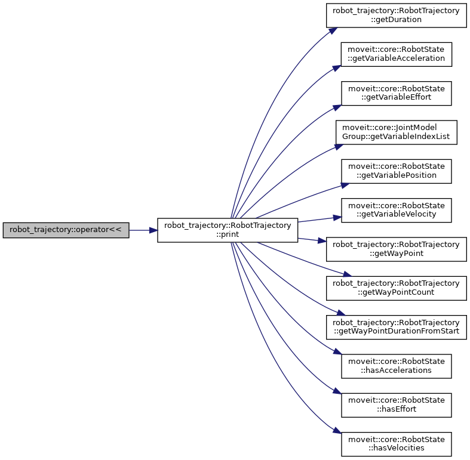
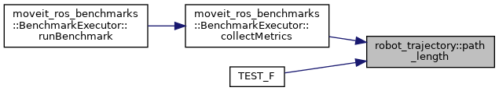
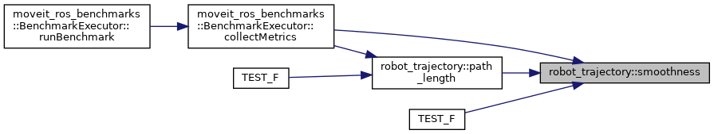

Classes | |
| class | RobotTrajectory |
| Maintain a sequence of waypoints and the time durations between these waypoints. More... | |
Functions | |
| MOVEIT_CLASS_FORWARD (RobotTrajectory) | |
| std::ostream & | operator<< (std::ostream &out, const RobotTrajectory &trajectory) |
| Operator overload for printing trajectory to a stream. More... | |
| double | path_length (RobotTrajectory const &trajectory) |
| Calculate the path length of a given trajectory based on the accumulated robot state distances. The distance between two robot states is calculated based on the sum of active joint distances between the two states (L1 norm). More... | |
| std::optional< double > | smoothness (RobotTrajectory const &trajectory) |
| Calculate the smoothness of a given trajectory. More... | |
| std::optional< double > | waypoint_density (RobotTrajectory const &trajectory) |
| Calculate the waypoint density of a trajectory. More... | |
Function Documentation
◆ MOVEIT_CLASS_FORWARD()
| robot_trajectory::MOVEIT_CLASS_FORWARD | ( | RobotTrajectory | ) |
◆ operator<<()
| std::ostream & robot_trajectory::operator<< | ( | std::ostream & | out, |
| const RobotTrajectory & | trajectory | ||
| ) |
Operator overload for printing trajectory to a stream.
Definition at line 598 of file robot_trajectory.cpp.
Here is the call graph for this function:

◆ path_length()
| double robot_trajectory::path_length | ( | RobotTrajectory const & | trajectory | ) |
Calculate the path length of a given trajectory based on the accumulated robot state distances. The distance between two robot states is calculated based on the sum of active joint distances between the two states (L1 norm).
- Parameters
-
[in] trajectory Given robot trajectory
- Returns
- Length of the robot trajectory [rad]
Definition at line 604 of file robot_trajectory.cpp.
Here is the call graph for this function:
Here is the caller graph for this function:

◆ smoothness()
| std::optional< double > robot_trajectory::smoothness | ( | RobotTrajectory const & | trajectory | ) |
Calculate the smoothness of a given trajectory.
- Parameters
-
[in] trajectory Given robot trajectory
- Returns
- Smoothness of the given trajectory or nullopt if it is not possible to calculate the smoothness
(a + b);
(a + b);
Definition at line 616 of file robot_trajectory.cpp.
Here is the call graph for this function:
Here is the caller graph for this function:

◆ waypoint_density()
| std::optional< double > robot_trajectory::waypoint_density | ( | RobotTrajectory const & | trajectory | ) |
Calculate the waypoint density of a trajectory.
- Parameters
-
[in] trajectory Given robot trajectory
- Returns
- Waypoint density of the given trajectory or nullopt if it is not possible to calculate the density
Definition at line 654 of file robot_trajectory.cpp.
Here is the call graph for this function:
Here is the caller graph for this function: